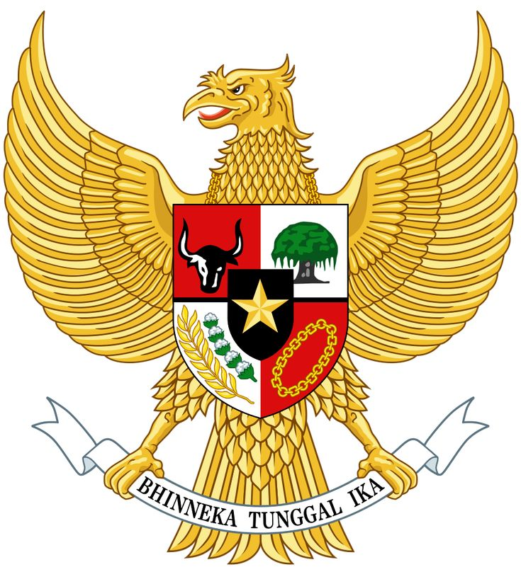

Dasar Negara Republik Indonesia
Pancasila adalah dasar negara Indonesia yang terdiri dari lima sila, yaitu:
Lambang negara Indonesia adalah Garuda Pancasila. Lambang ini terdiri dari burung Garuda dengan perisai di dadanya yang menggambarkan sila-sila Pancasila.
